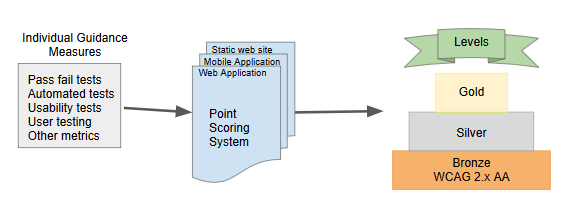

A new conformance structure is integral to Silver meeting the needs of people with disabilities, rapidly evolving technology, and the needs of regulators for clear compliance measurement. This editors' draft of a prototype of a conformance structure is based on the Silver research of 2017-2018, the results of the Silver Design Sprint of March 2018, and input from the AccessU Prototyping session of May 2018. This prototype is divided into three areas: Compliance, Measurement, and Accessibility Supported.
This is still a rough draft. Please comment on the general direction. Specific examples would be helpful.
This is the first draft of the prototype. It is a combination of suggestions from the Silver Design Sprint final report, public input from the Silver meeting at AccessU, and discussion in the Silver meetings. See the changelog for specific changes.
1. Background
The research done in 2017-2018 by the Silver Task Force, the Silver Community Group, and the research partners was used to identify the key problem statements in the area of conformance. See the Silver Research Summary slides for more detailed information.
The Problem Statements related to conformance are summarized below. See the Silver Problem Statements wiki page for the complete problem statements.
1.1 Problem Statements related to Conformance
Constraints on What is Strictly Testable. The requirement for strict testability for WCAG success criteria presents a structural barrier to including the needs of people with disabilities whose needs are not strictly testable. Guidance that WCAG working group members would like to include cannot be included. The needs of people with disabilities – especially intellectual and cognitive disabilities – are not being met.
Human Testable. Success criteria are measured by different standards and by people who often make subjective observations. Because there’s so much room for human error, an individual may believe they’ve met a specific conformance model when, in reality, that’s not the case. The ultimate impact is on an end user with a disability who cannot complete a given task, because the success criteria wasn’t properly identified, tested and understood.
Accessibility Supported. This is poorly understood, even by experts. Users experience difficulty understanding what qualifies as a content technology or an assistive technology; difficulty quantifying assistive technologies or features of user agents; claiming conformance with inadequate assistive technology; and difficulty claiming conformance.
Evolving Technology. Consider a more general approach that is not explicit and is flexible to the differences in technologies as they evolve.
1.2 Suggestions from the Silver Design Sprint
The Silver Design Sprint was a two-day face-to-face meeting of 30 experts in various areas of accessibility, including:
Accessibility influencers
Information architects
UX professionals
Developers (e.g., Web content, Document, Authoring tool, User Agent, Assistive Technology)
Legal specialists
Policy specialists
W3C Process experts
The Report of the Silver Design Sprint contains suggestions from the groups that address the Problem Statements. The suggestions related to conformance can be summarized as:
Design a conformance structure and style guides that shift emphasis from “testability” to “measureability” so that guidance can be included that is not conducive to a pass/fail test. Pass/ fail tests can be included, but they are not the only way to measure conformance.
Develop scorecard or rubric measures for testing task accomplishment, instead of technical page conformance.
Develop a point and ranking system that will allow more nuanced measurement of the content or product: e.g. a bronze, silver, gold, platinum rating where the bronze rating represents the minimal conformance (roughly equivalent to meeting WCAG 2 AA), and increasing ranks include inclusive design principles, task-based assessment, and usability testing.
Include a definition and concept for “substantially meets” so people are not excessively penalized for bugs that may not have a large impact on the experience of people with disabilities.
Remove “accessibility supported” as an author responsibility and provide guidance to authoring tools, browsers and assistive technology developers of the expected behaviors of their products.
Develop a more flexible method of claiming conformance that is better suited to accommodate dynamic or more regularly updated content.
2. What is Conformance?
Conformance relates to the ways of measuring whether or not accessibility guidance has been implemented correctly. For the purposes of this prototype, the conformance suggestions are grouped into three areas.
Measuring the overall conformance of a site, application, or other product that may evolve.
Measuring individual guidance (the equivalent of a WCAG 2 success criterion).
Providing guidance for accesssibility supported, the way that accessibility features are implemented by assistive technology, user agents (browsers, media players, native apps), and authoring tools
3. Overall Conformance
While Overall Conformance was not directly addressed as part of the Silver Design Sprint, a number of suggestions related to overall conformance were discussed. A key suggestion originated from Eve ??, a lawyer formerly a part of the Office of Civil Rights. She suggested that Silver members study the LEED Certification for green buildings for inspiration for a more flexible method to measure overall Silver Conformance. The LEED program uses a point system, that can varies by the type of building (Homes, Commercial, Neighborhoods, etc) and within each type, assigns a level: bronze, silver, gold, platinum. Advantages of this system include:
Greater flexibilty to customize conformance to meet evolving needs
Clear communication to the public of the level. (WCAG level A sounds good to people who are not familiar with WCAG, while Bronze level clearly implies that they can do better).
Point system allows prioritization of guidance without assigning the guidance to a level. This gives flexibility to have different priorities for different types of sites, apps, or products.
Allows creating incentives for desireable behavior that goes beyond individual pass/fail tests, such as usability testing and user testing with people with disabilities.
3.1 Adapting the LEEDS model to Silver

Silver could look have a conformance model where individual guidance is evaluated by different types of measures, like:
current WCAG pass/fail tests
automated tests
rubrics
distance from a baseline
grading scales
usability tests
testing with people with disabilities
and more (this is not a comprehensive list)
The individual guidance could use the type of test most appropriate for the guidance. The results of the measures are scored by a point scoring system that could be different for different types of sites or apps. The score is then used to determine the level: Bronze, Silver or Gold. Sites that currently meet WCAG 2.x AA could be grandfathered in at Bronze level. Sites that also meet the new content could be Silver level. Sites that go beyond (example: user testing with people with disabilities) could be gold level.
3.2 Levels
Bronze Level
Any site, application or product that currently meets WCAG AA would be grandfathered in at Bronze level. Most accessibility testing that can be performed with automated tests would probably fall under bronze level. Existing pass/fail tests associated with WCAG 2.0 success criteria would apply to points under Bronze level.
Silver Level
Silver level sites, apps, or products would meet the requirements of Bronze level plus additional points. It was suggested that the Silver level include the new guidance that would be included to address the needs of people with cognitive disabilities, low vision, and other disabilities that are not easily meaured with a pass fail test.
Gold Level
Editor's note
This section needs more work
. The suggestions were that sites, apps, or products that met Gold Level would meet Silver Level plus they would demonstrate more advanced accessibility measurements such as user testing with people with disabilitiles.
Platinum Level
Editor's note
This section needs more work
. This is an optional level that would demonstrate a organization commitment to accessibiltiy. If it is included, it could be used for organizations that have made a maturity-model commitment to accessibility in the organization that would ensure long-term accessibility for their site, application or product.
3.3 Point System (needs a better name)
Editor's note
The details of the point system still need considerable work and development.
The general idea is that different point systems could be set up to address specific types of sites, applications, or products. For example, a social media site that is updates thousands of times per second has different conformance needs than a small mostly static website. A site that is oriented for children might have different needs than a e-commerce site. Having different point systems give the flexibility to address those needs.
3.4 Concerns to be Solved
How to insure that people don't take the points that are easy to accomplish and use them to score high enough to achieve a level without making the overall site, app, or product accessible. One suggestions is to set up sub categories where people have to score enough in that category. Another suggestion was to start with a high score and subtract points to determine the final score, for example, you get 330 points out of a possible 450 points.
Certification system. Many people were interested and had ideas about certification. While W3C does not have the resources to certify individual sites, it possibly could be interested in certifying companies, who would then be authorized to certify sites. This goes beyond the scope that we are currently addressing, and should be discussed with W3C management.
How to handle the differences between WCAG 2.0 and WCAG 2.1 for grandfathering sites with existing WCAG conformance.
WCAG for young children? Are their needs different? More research input is needed in this area.
4. Individual Guidance Measurement
WCAG 2.0 and 2.1 use success criteria as the basis for determining conformance. That choice of structure has been very successful for 10 years and has resulted in WCAG 2.0 being accepted as a basis of accessibility regulation around the world. The unintended consequence of that decision became apparent during the development of WCAG 2.1. Task Forces who had worked for years identifying user needs and proposing success criteria found that their user needs could not be tested with a pass fail test, and therefore could not be included in WCAG 2.1. These proposals for success criteria were postponed to be addresssed in Silver.
One subgroup of the Silver Design Sprint, Table 5, chose to focus on more flexible measurement of individual guidance.
Editor's note
This information needs to be summarized and developed for this prototype.
The Overview of Table 5 provides a summary of their work and links to the photos of their prototypes.
A suggestion from the Silver Design Sprint which was also discussed at AccessU was the concept of "substantially meets". This would allow an organization to claim conformance to individual guidance where they have clearly put effort into meeting, but not fail because of a small number of bugs. For example, an e-commerce site with alternative text on thousands of product images would not fail because of one or two products where there was no alternative text. This needs thought to unintended consequences and organizations "gaming" the system to claim conformance without providing accessibility. Many people representing their companies accessibility departments were very interested in including this concept.
Sample of an individual test:
5. Accessibility Supported
Accessibility Supported is a poorly understood part of WCAG 2 conformance. Although there are many interpretations of tthe meaning of Accessibility Supported, for this purpose, we are taking the meaning that Accessiiblity Supported requires the author who wishes to claim conformance to WCAG to demonstrate that their site, app, or product meets the success criteria for the assistive technology and user agent in the language of the user. When the assistive technology or user agent fails to provide the necessary feature in the language of the user, then the author is required to make up that lack to claim conformance. While this was a good idea, in practice, the unintended result was a proliferation of javascript code to solve accessibility supported problems that in many cases reduced usability for people with disabilities.
One subgroup of the Silver Design Sprint, Table 2, chose to focus on accessibility supported. This information needs to be summarized and developed for this prototype. The Overview of Table 2 provides a summary of their work and links to the photos of their prototypes.
One suggestion from AccessU prototyping meeting was that the W3C webplatform.org tests be augmented with accessibility tests to measure the implementation of the accessibility support features of the major browsers.
A. Change Log
A.1 Changes Prior to First Public Working Draft
B. Acknowledgements
B.1 Participants in the Silver Task Force Active in the Development of This Document
Butler, Shari
(Pearson plc)
Campbell, Alastair
(Nomensa)
Cooper, Michael
(W3C Staff)
Horton, Sarah (The Paciello Group, LLC)
Ku, JaEun
(University of Illinois at Urbana-Champaign)
Lauriat, Shawn
(Google, Inc.)
McSorley, Jan
(Pearson plc)
Ran, Ruoxi
(W3C Staff)
Sloan, David
(The Paciello Group, LLC)
Spellman, Jeanne
(The Paciello Group, LLC)
B.2 Participants in the Silver Community Group Active in the Development of This Document
Alice Boxhall, Google, Inc.
Angela Hooker, Microsoft Corp.
Charles Hall, MRM // McCANN
Charles McCathie Nevile
Imelda Llanos
Jake Abma, ING Groep N.V.
Jennison Asuncion, LinkedIn
John Kirkwood, CityMouse, inc
John McNabb, Canadian Imperial Bank of Commerce
John Rochford, University of Massachusetts Medical Center
Kelsey Collister
Luis Garcia, eBay
Léonie Watson, The Paciello Group, LLC
Mark Tanner
Michael Crabb, The University of Dundee
Michellanne Li, Palantir.net
sweta wakodkar, Prakat Solutions Pvt Ltd.
B.3 Participants in the Silver Design Sprint
The following people participated in the Design Sprint of 2018 held in San Diego, California prior to the CSUN AT 2018 conference. We thank them for the generous gift of time that they donated to the Silver project.